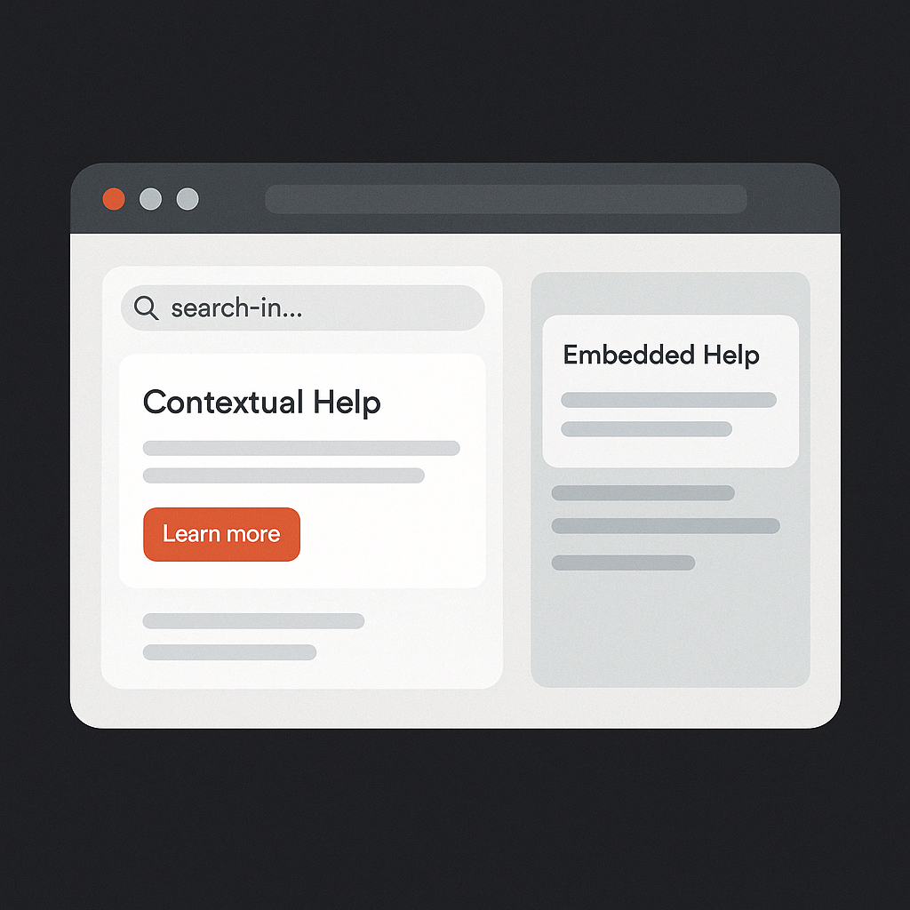
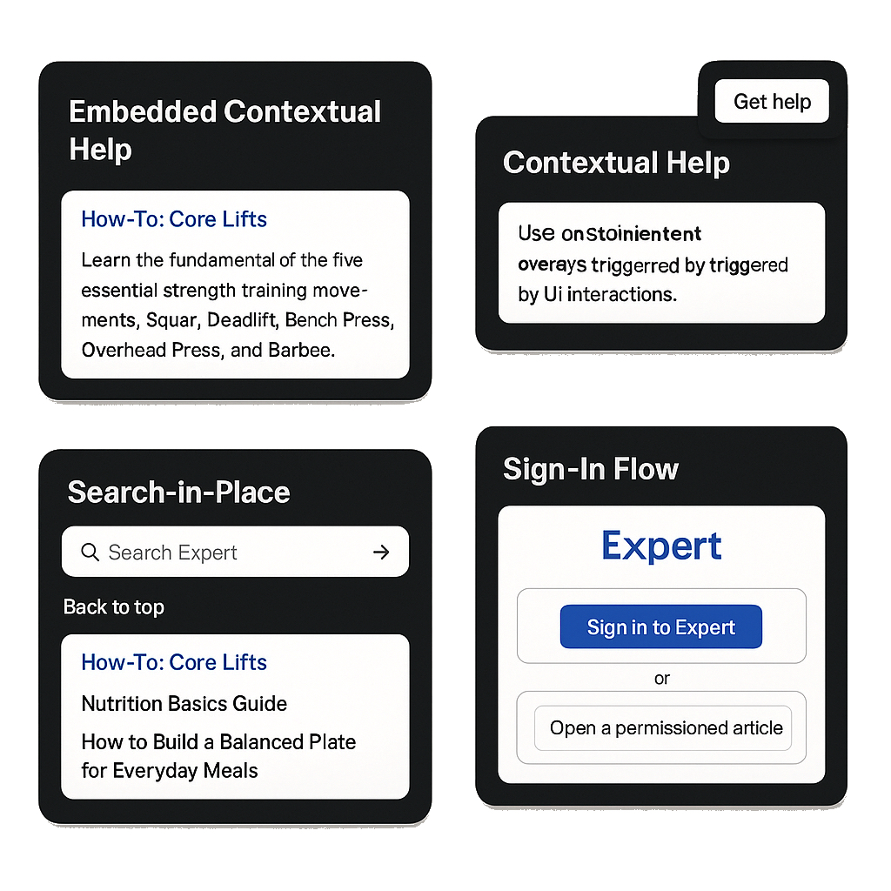

Expert Touchpoints & API Demo
This site showcases how Expert Touchpoints and authentication flows behave when integrated into a real web experience. Each touchpoint has its own dedicated page so you can explore the functionality in isolation and see how it would operate inside your product, portal, or app.

What This Site Includes
- Embedded Contextual Help — View Expert articles inline without leaving the page.
- Contextual Help — Open contextual overlays triggered by UI interactions.
- Search-in-Place — A drop-in search widget powered by Expert content.
- Sign-In Flow — Demonstrates how authenticated vs. anonymous users see content.

How to Use This Demo
- Sign in to Expert (if needed) For permissioned content or non-public sites, sign in first from the Sign-In page.
- Open a touchpoint page Use the navigation at the top to switch between Embedded Help, Contextual Help, Search-in-Place, and Sign-In.
- Interact like an end user Run searches, open overlays, and click into help content to see how Expert behaves inside a real UI.
- Use this in enablement or demos Walk CSMs, admins, and stakeholders through each page to explain what the touchpoint does and how it’s configured.
Behind the scenes, each page is just a simple HTML shell with a Touchpoint snippet pasted into it, plus a small amount of CSS to keep things clean and consistent. You can reuse this structure for your own internal demos or proof-of-concepts.